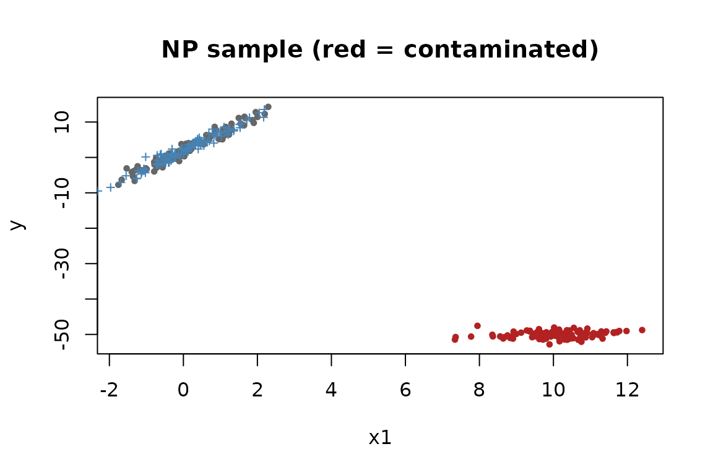

Gaussian regression: model variants and severe contamination
Source:vignettes/gaussian-model.Rmd
gaussian-model.RmdModel and algorithm
The target model is
,
, with priors
and
(see
?mixture_prior). All full conditionals are conjugate, so
the sampler is a pure Gibbs sampler:
- — Bernoulli, from the ratio of the two component densities;
- — Beta;
- — normal / inverse-gamma given the P sample and the NP units with ;
- contaminating component — (M0, Mjoint) or a rival regression (M1).
Data with 50% severe contamination
Half of the NP units have covariates centred at 10 (far outside the P support) and outcomes around , unrelated to the target regression .
d <- simulate_mixture_data("gaussian", n_prob = 100, n_nonprob = 200,
contamination = 0.5, beta = c(2, 5),
bad_beta = c(-50, 0), x_shift = 10, seed = 123)
plot(y ~ x1, data = d$nonprob, col = ifelse(contaminated == 1, "firebrick", "grey40"),
pch = 19, cex = 0.6, main = "NP sample (red = contaminated)")
points(y ~ x1, data = d$prob, col = "steelblue", pch = 3, cex = 0.6)
fits <- lapply(c(M0 = "M0", Mjoint = "Mjoint", M1 = "M1"), function(m)
mixture_fit(y ~ x1, d$prob, d$nonprob, model = m,
n_iter = 2000, burnin = 1000, seed = 1))
pooled <- baseline_fit(y ~ x1, rbind(d$prob, d$nonprob[names(d$prob)]),
n_iter = 2000, burnin = 1000, seed = 1)
rbind(truth = c(2, 5), naive_pooled = coef(pooled), t(sapply(fits, coef)))
#> (Intercept) x1
#> truth 2.000000 5.000000
#> naive_pooled 1.833503 -4.918666
#> M0 1.935399 4.952606
#> Mjoint 1.935399 4.952606
#> M1 1.933122 4.948577
sapply(fits, contamination)
#> M0 Mjoint M1
#> mean 0.5004272 0.5004272 0.5000318
#> median 0.5007562 0.5007562 0.5000086
#> lower 0.4369659 0.4369659 0.4335658
#> upper 0.5687666 0.5687666 0.5722262With such strong separation all three variants identify the
contaminated units; naive pooling produces a meaningless fit.
(M0 and Mjoint even give identical draws here:
the outcomes alone classify every unit with probability 0 or 1 to
machine precision, so with the same seed both chains make exactly the
same allocations.)
s <- filter_scores(fits$Mjoint)
range(s[d$nonprob$contaminated == 1])
#> [1] 0 0
range(s[d$nonprob$contaminated == 0])
#> [1] 1 1
plot(fits$Mjoint, type = "contamination")The posterior of is centred near 0.5 but has genuine spread: it is a population-level parameter. The fraction of the observed NP units that are contaminated is reported separately:
summary(fits$Mjoint)$contamination
#> mean sd 2.5% 50% 97.5%
#> contamination 0.5004272 0.03440216 0.4369659 0.5007562 0.5687666
#> contamination_realized 0.5000000 0.00000000 0.5000000 0.5000000 0.5000000
#> ess mcse
#> contamination 1030.616 0.001071611
#> contamination_realized NA NAWhen does the covariate term matter?
Mjoint adds information from the covariates. When
contaminated units differ only moderately in their outcomes but lie away
from the P covariate distribution, the leverage term sharpens
classification. Compare filter-score AUCs on a harder design, in which
the contaminating regression
crosses the target line
at
,
inside the region where contaminated covariates are concentrated:
d2 <- simulate_mixture_data("gaussian", n_prob = 150, n_nonprob = 300,
contamination = 0.3, beta = c(2, 5),
bad_beta = c(4, 3), x_shift = 2, seed = 7)
f0 <- mixture_fit(y ~ x1, d2$prob, d2$nonprob, model = "M0",
n_iter = 2000, burnin = 1000, seed = 1)
fj <- mixture_fit(y ~ x1, d2$prob, d2$nonprob, model = "Mjoint",
n_iter = 2000, burnin = 1000, seed = 1)
labels <- 1 - d2$nonprob$contaminated
c(M0 = filter_auc(labels, filter_scores(f0)),
Mjoint = filter_auc(labels, filter_scores(fj)))
#> M0 Mjoint
#> 0.8738624 0.9342857
rbind(truth = c(2, 5), M0 = coef(f0), Mjoint = coef(fj))
#> (Intercept) x1
#> truth 2.000000 5.000000
#> M0 1.870961 4.371100
#> Mjoint 1.945880 4.809154The covariate term improves both classification and the coefficient estimates, but some bias remains: contaminated units close to the crossing point are genuinely indistinguishable from compatible ones. No filter can remove contamination that is observationally equivalent to the target model — which is also why such units do little harm.
Settings worth knowing
-
mixture_control(c_infl = )controls how much more dispersed contaminated covariates are assumed to be (default 4 for the Gaussian family). -
mixture_prior(pi_shape1, pi_shape2)encodes prior beliefs about the NP sample’s reliability. - For model
"M1",mixture_control(m1_update = "original")reproduces the original research code, which ignored the units allocated to the rival regression when there were at most of them; the default"exact"uses the correct full conditional. - Posterior draws for further analysis:
as.matrix(fit, "all"), e.g.coda::mcmc(as.matrix(fit)).